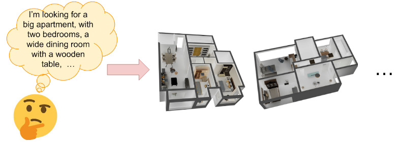
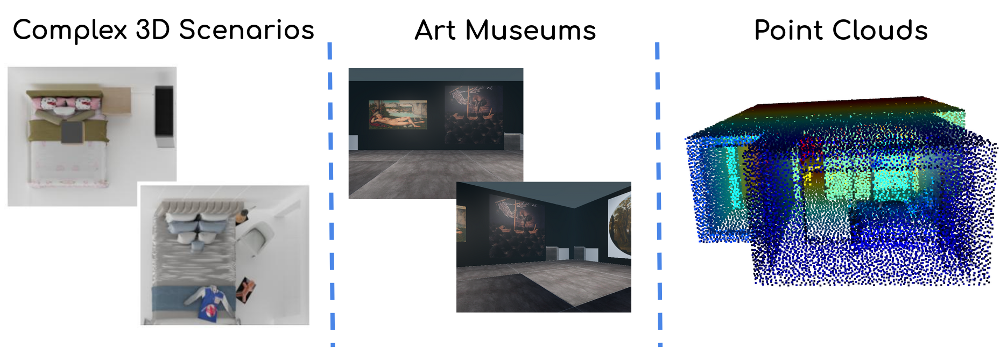
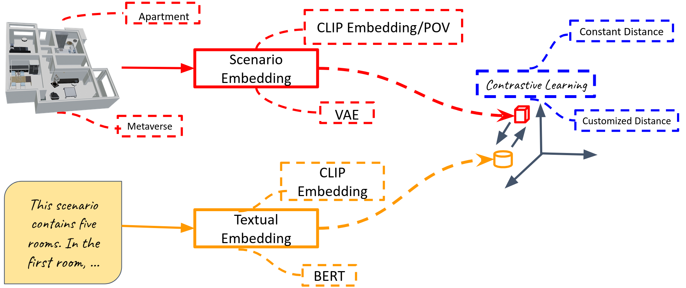
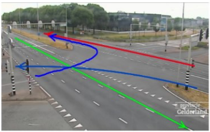
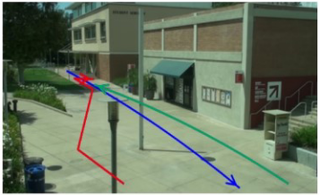
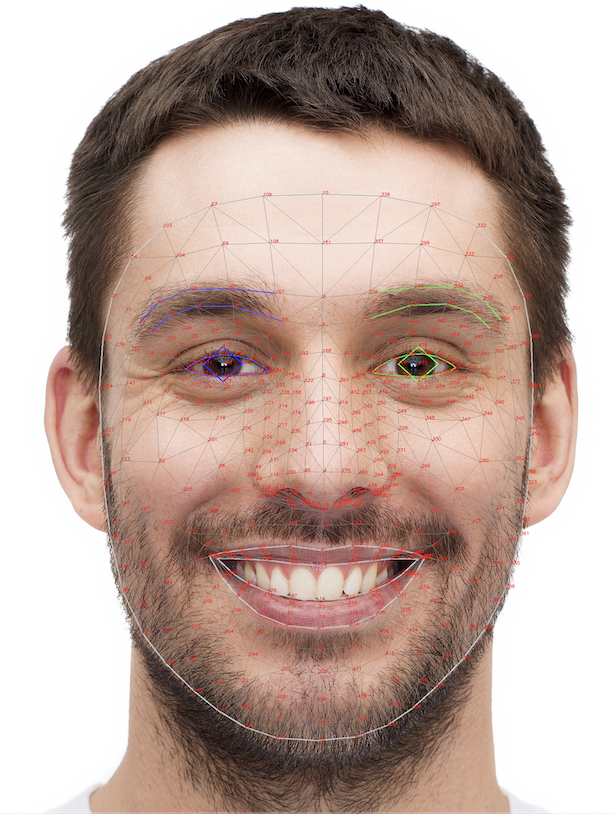

Obtaining the most relevant 3D scene based on the given query.

Text-to-Scene Retrieval

Different data types
Various Proposed Approaches

IndustryGerman Primate Center (DPZ)
Primates Behavioural Analysis
Implemented for German Primate Center (DPZ)
Detection, Tracking, and Pose Estimation
IndustryIran's National Elites Foundation
Surveillance Video Synopsis and Analysis
Implemented for Iran's National Elites Foundation
Using OpenCV and deep learning techniques for saving essential events
Two types of videos, including traffic videos and surveillance videos (including pedestrians),
have been focused on in this project
Developing some practical approaches for summarizing these types of videos
Implementing some analytical methods for anomaly detection
Using Hough Transform for lane detection
Using hierarchical clustering and dynamic time warping for directions clustering
Reconstructing Summarized Videos
Original Video (950 frames)Reconstructed Video (190 frames)
Different Analysis like obtaining the most common Trajectories


ProjectEye key points
Fatigue Detection and Patient Assistant Tools using Eye Key Points
Using the eye key points to measure the level of fatigue by measuring the number and duration of
eye blinks
Eye tracking to ease the way of communication using a virtual keyboard

ResearchCompressed-domain video
Action Recognition in Compressed Domain Video
Using compressed domain elements like Motion Vectors and Residuals for detecting events in a
video
Implementing a new approach by using a window for accumulating the residuals in order to reduce
the number of processed residual frames in compressed domain analysis
Using one-dimensional convolutional layers for fast and efficient temporal pooling